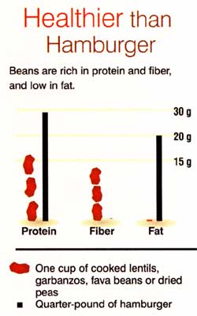
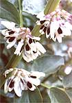
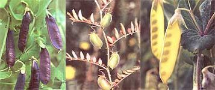

Lentils, chickpeas, fava beans and soup peas are perfect crops for home gardeners who want pure food and self-reliance. Virtually fat-free, these crops are rich in protein, fiber and minerals. All four crops are easy to store (no canning, freezing or drying required!) and best of all, they taste great in a variety of soups, casseroles, sal ads and other dishes. If you're trying to reduce your meat intake, beans and peas are excellent alternatives. (See the chart)
These beans thrive in coot weather and should be planted earlier than snap, soy or lima beans. They all produce attractive, carefree plants with pods full of seeds that are easily dried and stored. As legumes, their roots host beneficial bacteria that produce nitrogen needed for plant growth and protein production. Although these dried beans will keep indefinitely, you'll find that fresh homegrown dried beans and peas will cook quicker and be easier to digest than their supermarket counterparts.
Fava beans Wicia fava) were grown by the ancient Egyptians and Chinese, as well as by the Greeks and Romans. They were a mainstay of the European diet until Columbus introduced warmer-weather beans. Millions of people in the Middle East, India, Burma, Mexico and Brazil include them in their daily diet.
Fava beans are a tenacious and trouble -free crop that succeeds where the growing season is short and other beans fail. With good spring rains, they can survive frosts and require minimal or no watering Easy to grow, they also produce abundantly.
Varieties. Some gardeners grow a large-seeded fava called the broad bean, which is eaten shelled as a fresh bean. Unfortunately, most varieties of broad bean aren't very flavorful as a cooked dry bean. To my taste, the best dry favas are the small-seeded ones normally grown in North America as cover crops. These are usually referred to as tick or bell beans and have seeds more like large peas than the huge kidney shape of other favas.
Ful Mesdames (Fava Bean Salad)
Serves 3 to 4
This basic fava bean salad uses ingredients typical of Middle Eastern fava dishes and is traditionally served with hard-boiled eggs and parsley.
1/2 cup dried fava beans, soaked4 tablespoons olive or flax oiljuice of 1/2 lemon2 garlic cloves, crushed or finely chopped
Cook beans until soft (about 90 minutes). Drain well. Dress with oil, lemon and garlic. Let cool.
Most favas grow 4 to 5 feet tall. With succulent looking, blue-green leaves. Except for a single crimson-flowered variety, blooms are white with distinctive black centers. The pods that splay out from the stem vary considerably in length. with some cultivars producing pods up to I foot long. Most varieties need the better part of four months to produce mature beans.
Planting time. In most regions, seeding as soon as the soil can he worked in spring should enable plants to mature to beans. Light frost will not harm the young plants. In coastal and southern areas, favas can be planted in early spring or fall. They are hardier than peas; if you can plant peas in autumn, you can plant favas as well. Fava blossoms will fall off before setting pods if temperatures go much above 70 degrees and won't mature seeds in places where hot summers come on quickly. Strategies that prolong pea harvests also work for favas, such as planting in shadier areas, billing soil around the base of the plants, mulching and keeping the soil moist.
Favas grow successfully in many different soils, even heavy clay, and they shouldn't need fertilizer if grown in healthy garden soil. They do best in well-cultivated ground that is high in phosphorous and potassium and, like peas, they- prefer soil that is not too acidic.
Maintenance. Fava bean seedlings compete poorly with weeds and, in the early stages. plants can benefit considerably from mulching or from soil drawn around the base of the plants with a hoe or rake. All varieties I've grown so far haven't required support, but in windy places it might be worthwhile to stake each row's end and enclose the beans with string.
Favas are fairly pest- and disease-resistant. Their most common problem is aphids. Some gardeners suggest controlling aphids by using insecticidal soap or by pinching off infested plant tops. I find that aphids tend to congregate only on a small percentage of plants and will leave the rest alone.
Harvesting. Picked green-that is, as soon as the pods are well-formed and deep green favas can be shelled and eaten raw or cooked. (Some people also eat the leaves, in salads.) For dry beans, wait to pick until half the pods have dried black, usually by the end of July. It takes several weeks for all the pods to dry-, necessitating two or three pickings. The weather of late July and early August most often allows leisurely harvesting, but if left standing too long in hot weather, the pods of some varieties will shatter and the beans a-ill fall to the ground.
The beans can be shelled by hand or threshed by foot in a box or on a tarp. Dry them thoroughly (so a fingernail can't dent the bean) before storing. Bell beans yield up to 12 pounds from 50 rowfeet, while the larger -seeded favas generally produce about three -quarters that amount.
Loving-Kindness Hummus
Serves 4
1 cup chickpeas (or favas, lentils or peas)1 carrot, large3 garlic cloves (or more)1 bay leaf2 lemons, juiced1/2 cup sesame tahinisalt to taste
Soak chickpeas in 3 cups of cold water for at least four hours. Rinse and add fresh water to cover. Simmer for 90 minutes with coarsely chopped carrot, bay leaf and whole, peeled garlic cloves until tender. Drain, reserving the cooking liquid.
Remove bay leaf and mash the rest while still hot. Stir in lemon juice, tahini and crushed or finely chopped garlic. Add small amounts of cooking liquid until desired moistness is reached. Salt to taste.
Serve with whole-grain crackers or pita bread as an appetizer or snack. Makes a good sandwich spread, too.
Favism
Some individuals, usually males of Mediterranean descent, experience an allergic reaction when they eat fresh fava beans or inhale fava flower pollen.The symptoms of favism usually disappear without treatment within a few days of exposure. Where fava beans are a dietary staple, allergies to them are detected as a matter of course; in North America, the possibility of allergic reaction, though extremely slight, is worth bearing in mind.
Cooking. With their rich, earthy flavor, small-seeded bell beans are one of my favorite beans. Food writers say favas need a long soaking and many hours of cooking. No doubt this is because most commercially available fava beans have aged and oxidized considerably before reaching the consumer. I have found that all the favas I've groan require curly about 90 minutes of simmering after an overnight soak. The seed coat retains a chewiness that is quite pleasant in some varieties but decidedly tough in others.
The taste of fresh favas stewed or Simmered is somewhere between that of peas and lima beans. They are too old for fresh use if a yellowish-green skin has already formed. Green favas have as much protein as green limas, about a quarter more than fresh peas, and 10 times as much as snap beans, plus more iron and potassium than any of these.
Saving seed. Favas are mostly self-fertile but can he cross-pollinated by insects. If you want to maintain pure strains, plant only one variety, and stagger plantings or grow different cultivars as far apart in the garden His possible.
Chickpeas (Cicer arietinum). also called garbanzo beans, have been grown in Mediterranean countries since 8,000 B.C. The Romans used the word "arietinum (rata-like) to describe this bean because its roundish, compressed seed somewhat resembles a ram's head with curling horns. A staple of their diet, chickpeas still play an important role in the regional cooking of southern Europe. Chickpeas are widely grown in India and Burma, where they rival wheat in acreage under cultivation. They are India's most important legume.
The chickpea is a delicate, graceful plant that branches near the ground and is usually about 2 feet high. One or two seeds are borne in numerous round, swollen pods about four months from the time of sowing. Chickpeas are a cool-weather crop and should be sown, like peas, early in spring. The plants are best thinned to about 15 inches apart because of their spreading habit. They are drought-tolerant, don't need staking, and require little attention beyond occasional weeding or hoeing. The dry pods are more difficult to process than those of other beans because the shells have a lanolin like stickiness and cave in, rather that split apart, when hand-threshed. I recommend placing them between two tarps on the ground to "do the shuffle" over them, or shaking them in a large box or an ice chest.
Cooking. If you've already prepared such specialty dishes as tabbouleh and hummus, you're in for a special treat when you prepare them with homegrown chickpeas. As with other freshgrown beans, their taste is mild and sweet, and cooking times are considerably less than is usually recommended. In this case, 90 minutes (rather than 2 1/2 hours for store bought beans) is sufficient after an overnight soaking.
The chickpea is one of the most nutritious members of the bean family, rich in protein, calcium, iron and B vitamins.
Lentils (Lens culinaris) have been cultivated for more than 10,000 years. Today, lentils are enormously important in many countries, especially in Asia and North Africa.
Lentils are small and very branching plants, forming tufts over 1 foot high. The small, white or pale-blue flowers are produced in pairs and are succeeded by very flat pods, each of which usually contains two or three seeds. As peas' close cousins, lentils also do best in cool, moist, sandy loam. They are hardy, easy-to-grow nitrogen-Fixers that can be planted as soon as the soil is workable in the spring. Sow seeds about 1/2 inch deep and 4 inches apart.
Lentils are easily threshed by hand or foot. Crossing does not readily occur between different cultivars, so you can easily save some seeds each season.
Cooking. Lentils need no soaking and cook relatively quickly, from 10 to 40 minutes depending on variety. They must be watched because, unlike chickpeas, they soften easily and can lose their texture. In the Middle East they are most often used in soups and stews, and are frequently flavored with lemon, olive oil and garlic. In south India, where they are a major source of protein, many methods are used to prepare lentils for breads, fritters, salads, pancakes and vegetable dishes. Lentils are 25 percent protein and arc rich in iron and vitamin B.
Most people who grow- peas (Pisum sativum) don't think of allowing them to dry on the vine to then store until ready for use. Whole dried peas are excellent cooked in many of the ways lentils, chickpeas, favas or other beans are cooked, and they add a rich, creamy gravy and smoky flavor to winter dishes.
Soil Preference. Peas thrive in welldrained, rich, sandy, alkaline soil. Because they can rot in cold, wet ground, it is often worthwhile, especially for early plantings, to hill the soil up under pea fencing or in pea beds, so it can dry out and warm up before planting. Peas will tolerate some shading.
Varieties. Although peas are natural climbers, many low-growing varieties will support themselves with the help of neighbors. Varieties over kneeheight should be given support or planted along a fence or trellis.
Dry pea varieties range from tiny. round seeds, such as 'Golden Edible Pod. to those with large, rectangular seeds. 'there is a major division between fresh-eating peas and those best used as dry peas for soups. Although most shelling peas aren't very good soup peas and vice versa, I have found many edible pod peas that are rich and flavorful when used in soups and curries. My favorite is 'Osayo Endo.' Some soup peas break down n quickly to make a rich broth and some retain their shape for a pleasing effect.
Planting. Peas generally can be sown n as soon as the soil can be worked until .June. August planting for fall harvest can also succeed if the weather cooperates. Sow seeds 1 inch apart and 1 inch deep. Ilea plants can tolerate crowding, so rows can be spaced as closely as a few inches.
Maintenance. Peas are light feeders: if organic matter such as rotted manure, compost, leaf mold or old hay has been worked into the soil they should do very well. ICs best to weed peas well at the beginning, because once they start growing its hard to work between the vines without damaging them. Peas like plenty of water; it's especially important to maintain even moisture during flowering and pod set.
Harvesting. Because peas tolerate crowding they are capable of very high yields. I've obtained up to 17 pounds per 100 square feet from varieties broadcast in wide beds. Rows of fenced peas can provide more than 10 pounds per 100 feat.
Cooking. Homegrown, dried peas will take 60 to 90 minutes of simmering to soften. Varieties vary considerably in holding their texture and you may prefer shortening or lengthening cooking time, depending on the kind of stew or soup you're preparing.
Saving seed. Peas are self-fertile and breed true, so saving your own seed is simply a matter of keeping some of your harvest for the next planting. I haven t seen any pea crosses in all the years I've grown them.
Fava Soup Beginning
Serves 3 to 4
Although 90 minutes simmering after an overnight soaking is enough to cook homegrown favas, longer cooking will not render them mushy as it does other beans.
4 cups cooked favas1 large onion, chopped2 garlic cloves, minced1 carrot, gratedtomato sauceplain yogurtspices and seasonings (choose your favorite favors)
Combine favas with sautéed onion, garlic and carrot. Add tomato sauce, plain yogurt, spices and seasonings, then puree in blender. Reheat without boiling.
Sprouted Chickpea Salad
Serves 4 to 6
2 cups chickpeas, sprouted2 garlic cloves, finely chopped1/2 cup chopped chives or scallions1 tomato, diced1/4 cup fresh parsley, chopped2 tablespoons wine vinegar or lemon juice1/2 cup olive oil sea salt and freshly ground black pepper to taste
Combine all ingredients and toss to mix. Can be served on a bed of salad greens.
Dan's Best Peas & Beans
Here are some of the cool-weather beans you can order from Dan Jason's Salt Spring Seeds; PO. Box 444; Ganges, Salt Spring Island; British Columbia, Canada V8K 2W1. (Catalog: $2. Will ship to the United States.)
A U.S. seed source is Horus Botanicals; 341 Mulberry; Salem, AR 72576. They offer five lentil varieties, over 30 soup peas, nine favas and two chickpeas. (Catalog: $3.)
'Purple Fava' These striking, large, royal-purple seeds make fine fresh-shelling beans. Rich flavor and creamy texture cooked as dry beans.
'Bell Bean' Hardy, small-seeded fava. Delicious dry bean; also excellent as a fresh-shelled bean. High yields. Best fava for cover cropping.
'Chestnut' Large-seeded chickpea with rich, sweet flavor. Great for making hummus (see the recipe) .
'Hannan' Delicious black chickpea with a rich, nutty flavor.
'Ethiopian' Unusual lentil looks almost like small pebbles. Rich flavor.
'French' Tiny, greenish-gray lentil with creamy, nutty taste.
'Golden Edible Pod' Unusual yellow pods are easy to see for picking and are good when eaten young. Wonderful soup pea. Heat-tolerant.
'Manitoba' Large edible tendrils. Good fresh or as a soup pea.
'Osayo Endo Snow' Use green before pods swell. Dried white peas have excellent flavor.
'Portuguese Edible Pod' Eaten green pod and all. Large brown seeds are a good soup pea.
'Tall Capucijners' Beautiful purple pods produce large brown soup peas. Heirloom variety from Holland.
|
 Fava beans' bloom is booth delicate and dramatic |
 Left) These Capucijiners' soup-pea pods are easy to see when picking, and make delicious pea soup (Center) Chickpeas produce smallish, fuzzy pods, each containing one or two peas. (Right) These are 'Golden Pod' peas. |
 |